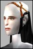

Ayvalen
Leetas
 Registered: Apr 2002
Posts: 68 | Beer Shirts! On searching the AG database for shirts I found a large Beer Shirt which I have yet to see in the game. Aside from having a cool name and grizzly appearance, there are a horde of other souvenirs that have yet to be implimented as far as I know, from whatever place that sells these Beer Shirts (It sounds like a bar somewhere, probably clan, but I'd risk the guards to get some souvenirs  )
Please implement these! I WANT MY BEER-SHIRT!  |
Kanatach
Phear Leet
 Registered: Mar 2002
Posts: 34 | Me too! |
xbmspec
Phear Leet
 Registered: Nov 2001
Posts: 426 | NO DROP
Bah, time to go camp some uber spawn. |
malaclypse
Soleet
 Registered: Nov 2001
Posts: 31 | If it drops from who I am thinking of then it probably will not be camped. Never tried killing him, but he is always there when I go in and the place is always empty.
For those who cant work it out from the description I'll give you a couple of hints but not spoilers.
The place in question was shown in the animated series and was added at about the time of the cyborg dungeon patch.
It is in a neutral town, near a clan stronghold.
I'll try him myself when I get back from work, but I guess that my lowly level 115 MP will not be able to solo him  |
xbmspec
Phear Leet
Registered: Nov 2001
Posts: 426 | The bartender drops nothing. |
malaclypse
Soleet
Registered: Nov 2001
Posts: 31 | Oh.
I remember that he refused to talk or trade with me. Unless there is some keyword or phrase, I guess the item is not in the game. |
Ayvalen
Leetas
Registered: Apr 2002
Posts: 68 | He hates cyborgs, just ask him about those. And no, he doesn't drop a Beer shirt. The shirt in question is actually with a whole line of other items and souvenirs that come from one place. |
Ayvalen
Leetas
Registered: Apr 2002
Posts: 68 | |
Ayvalen
Leetas
Registered: Apr 2002
Posts: 68 | C'mon.
14.6 Patch Notes
- Beer Shirts implimented.
Now how hard is that?
Also, I liked UO's alchoholic effects, where you stumbled around for a bit. Maybe FC can make the screen change color a bit as your character makes spontaneous turns into walls and things while walking under the influence. (Even worse if you're in a yalm ) |
Chlamydia
Soleet
 Registered: May 2002
Posts: 89 | Drunk Driving in AO?
thank god Bounding boxes do absolutely nothing or this could be dangerous |
Kayosz
Leet
 Registered: Jul 2002
Posts: 1 | I want one! I want one!  |


 Last Thread Next Thread
Last Thread Next Thread 
 June 24th, 2002 19:09
June 24th, 2002 19:09